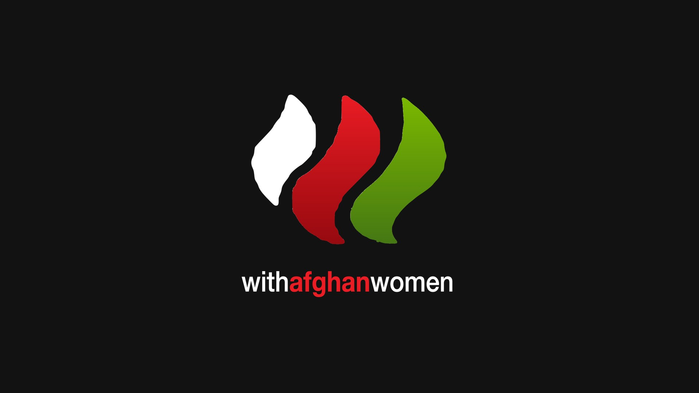

With Afghan
Women

Dare voce alle donne afghane
With Afghan Women è un progetto italiano nato il 16 agosto 2021, subito dopo la presa di Kabul, da un’idea della manager Veronica Civiero e della blogger Marta De Vivo.
L’obiettivo è dare visibilità alle donne afghane e far conoscere le loro storie attraverso una rete digitale, soprattutto su Instagram e Twitter.
Oltre 600 volontari
Al progetto hanno aderito oltre 600 volontari, ognuno con le proprie competenze. Il lavoro era organizzato in un gruppo Telegram con sottogruppi dedicati: grafiche, traduzioni, contatti con le donne afghane e aspetti legali.
Membro del team Growth
Per circa 6–8 mesi ho collaborato al progetto come volontario, da membro del team Growth. Una parentesi diversa da tutto il resto del mio lavoro, che porto con me.
Come funzionava
Una rete digitaleInterviste, anche notturne, a donne di età, etnie e condizioni diverse, comprese le ragazze di TEDxKabulUniversity.
Volontari divisi per competenze: grafica, traduzioni, contatti diretti con le donne afghane e supporto legale.
Instagram e Twitter come canali principali per diffondere le loro voci in tutto il mondo.
Il progetto in numeri
Dal 2021Un progetto nato in poche ore e cresciuto grazie a chi ha messo a disposizione il proprio tempo e le proprie competenze.
 Next project
Lunapark · NapoliEdenlandiaProgetto completo
Next project
Lunapark · NapoliEdenlandiaProgetto completo